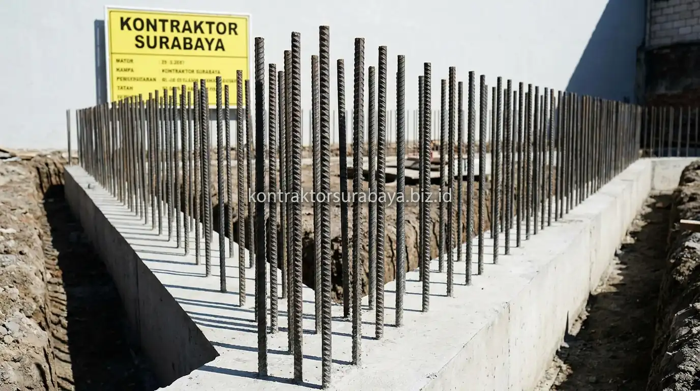

Membangun rumah dari sebidang tanah kosong merupakan sebuah perjalanan besar yang membutuhkan perencanaan matang dan eksekusi teknis yang presisi. Bagi pemilik rumah awam, memahami tahapan konstruksi sangat penting agar Anda dapat memantau progres pekerjaan di lapangan dengan percaya diri serta memastikan bahwa setiap rupiah anggaran yang dikeluarkan menghasilkan bangunan yang aman, kokoh, dan berumur panjang.
1. Tahap Perencanaan: Desain dan Perizinan
Tahap 1 dan 2 mencakup penyusunan desain beserta RAB, dilanjutkan pengurusan perizinan bangunan sebelum pekerjaan fisik dapat dimulai.
- Penyusunan Desain & RAB: Desain arsitektur, gambar kerja DED, dan RAB disusun secara terintegrasi agar rancangan visual sesuai dengan plafon anggaran pemilik rumah.
- Pengurusan Legalitas & PBG: Perizinan bangunan (PBG) diproses berdasarkan gambar teknis final, memastikan kepatuhan terhadap regulasi Garis Sempadan Bangunan (GSB) dan Koefisien Dasar Bangunan (KDB) di Surabaya.
2. Tahap Struktur Bawah: Galian hingga Kolom
Tahap 3 dan 4 meliputi pekerjaan galian dan pondasi, dilanjutkan pemasangan sloof dan kolom sebagai kerangka penopang utama bangunan.
- Galian Tanah & Pondasi: Dilakukan pembersihan lahan (land clearing), pengukuran bouwplank, galian tanah, dan pemasangan pondasi (batu kali, strauss pile, atau footplat) sesuai daya dukung tanah setempat.
- Pemasangan Sloof & Kolom: Pengecoran sloof pengikat dan kolom praktis/utama dilakukan setelah pondasi mengeras, membentuk kerangka penopang yang mengunci seluruh beban bangunan.

3. Tahap Struktur Atas: Ring Balok hingga Atap
Tahap 5 dan 6 mencakup pemasangan ring balok sebagai pengikat bagian atas dinding, dilanjutkan rangka dan penutup atap sebagai pelindung utama bangunan.
- Pemasangan Ring Balok & Dinding: Pasangan bata ringan (hebel) atau bata merah dinaikkan secara bertahap, lalu dikunci oleh balok ring beton bertulang di bagian atas dinding.
- Rangka & Penutup Atap: Pemasangan kuda-kuda baja ringan, insulasi aluminium foil peredam panas, serta genteng penutup atap dipasang presisi sesuai kemiringan desain.
4. Tahap Akhir: Instalasi MEP dan Finishing
Tahap 7 mencakup instalasi mekanikal elektrikal dan plumbing, dilanjutkan pekerjaan finishing seperti pengecatan dan pemasangan lantai sebelum rumah siap huni.
Instalasi pipa air bersih, saluran pembuangan air kotor, pipa talang hujan, serta pipa conduit kabel listrik ditanam di dalam dinding sebelum proses plester dan acian dilakukan. Setelah uji tekanan air dan uji kelistrikan berhasil, tahapan berlanjut ke pemasangan keramik lantai/dinding, kusen pintu-jendela, pengecatan cat dasar & cat top coat, hingga pemasangan perlengkapan sanitair kamar mandi.
"Kekuatan sebuah rumah ditentukan oleh kedisiplinan urutan kerja. Melewatkan tahapan pengeringan beton atau terburu-buru melakukan finishing adalah pemicu utama kerusakan dini pada bangunan."
5. Berapa Lama Total Waktu yang Dibutuhkan untuk Ketujuh Tahapan Ini?
Durasi total ketujuh tahapan bergantung pada luas bangunan, jumlah lantai, dan kompleksitas desain, sehingga estimasi akurat baru dapat disusun setelah survei lahan dan penetapan spesifikasi final.
Pembangunan rumah tinggal 1 lantai tipe 45 hingga tipe 100 umumnya memerlukan waktu antara 3 hingga 5 bulan. Sementara itu, rumah bertingkat 2 lantai membutuhkan durasi rata-rata 6 hingga 9 bulan karena memerlukan waktu tunggu pengeringan pelat dak beton lantai 2 serta perancah scaffolding yang lebih kompleks.
Setiap tahapan di atas memerlukan pengawasan lapangan yang konsisten agar hasil akhir sesuai dengan RAB dan gambar kerja yang telah disepakati. Pelajari cakupan layanan konstruksi rumah pada halaman jasa kontraktor rumah, atau lihat ragam layanan lain pada halaman layanan kami.